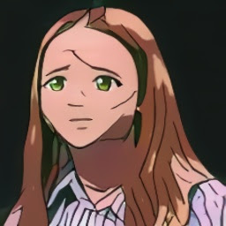

Алия Осино (яп. 忍野 忍, Оливье, урождённая в Буинске(яп. 春野)) — Главная героиня серии и спутница Файрузы. На вид девочка 8 лет, хотя на самом деле, по её собственному признанию, ей уже более 500 лет. Настоящее имя — Олиэ (англ. Oliv`e). Некогда была могущественным вампиром, который и превратил Файрузу в своего подчиненного. После событий главы «День группы у Родмиркуна» осталась в ослабленном состоянии без своих сил и прежней личности.
